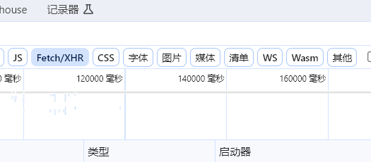
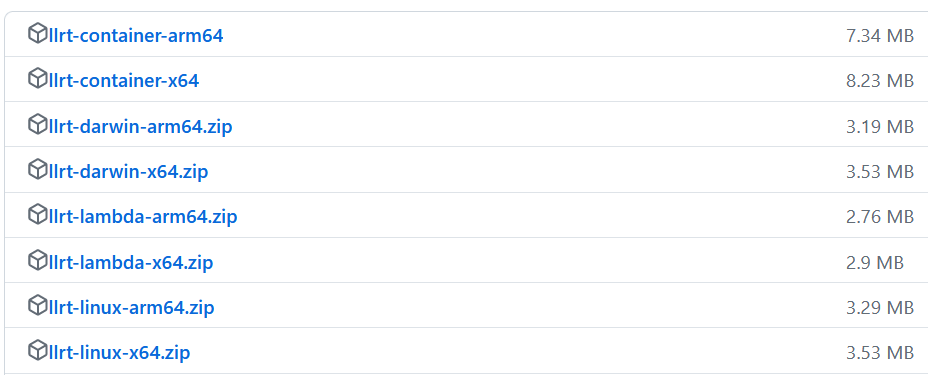

最近更新.rss.xml
工具收藏
inngest 可扩展、低延迟、事件驱动的持久执行平台。 支持部署到无服务器、服务器或边缘的功能。
inngest 可扩展、低延迟、事件驱动的持久执行平台。 支持部署到无服务器、服务器或边缘的功能。
我们为什要学语法？
为了造句
长语句由基本句组成
基本句就是不能再拆的句子
简单句，Simple Sentences
句子成分
主语
谓语动词
宾语
宾语补语
（主语）补语
中国英语学习中又称作表语
中国英语学习中又称作表语
定语
状语
同位语
动作
并非一般意义上动作，更接近 『 动词』
有哪些 动作？
并非一般意义上动作，更接近 『 动词』
有哪些 动作？
pubdate:2019-09-23 21:28:21
tags:typescript，读书
同意以下约定后方可使用本产品
试用约定：
你可以试用任意时长，当你觉得本产品对你有用时一个月后失去试用资格。
付费约定：
在订阅时间内你可以使用本产品。
视同订阅的情况：你对崮生本人有过任意形式的帮助、你对社会有过公认的贡献、无法支付。
订阅金额：等价10人民币，可采取任意支付方式，不限制时间（你可以决定任意时间后采取任意付费措施，但现在就开始使用）。
订阅时间：从付费之时到一百次产品更新的使用权，可叠加。
在你不记得上述约定的情况下不视为违反付费约定。
禁止使用与免责约定：
禁止使用本产品用于任意违法乱纪相关行为。
作者不为你使用本产品所产生的任何后果负责。
订阅金额：等价10人民币，可采取任意支付方式，不限制时间（你可以决定任意时间后采取任意付费措施，但现在就开始使用）。
视同订阅的情况：你对崮生本人有过任意形式的帮助、你对社会有过公认的贡献、无法支付。
作者不为你使用本产品所产生的任何后果负责。
禁止使用与免责约定：
试用约定：
禁止使用本产品用于任意违法乱纪相关行为。
订阅时间：从付费之时到一百次产品更新的使用权，可叠加。
在订阅时间内你可以使用本产品。
你可以试用任意时长，当你觉得本产品对你有用时一个月后失去试用资格。
在你不记得上述约定的情况下不视为违反付费约定。
付费约定：
为挂件生成快照
1.
安装 OceanPress插件
2.
挂件的左上角会出现一个🌊标识，如果是灰色的则代表没有生成过该挂件的快照，点击🌊即可更新快照（不会自动生成，需要手动点击更新）

例如下方就是使用的挂件 excalidraw 绘制的图，然后使用OceanPress插件保存的快照， 架构设想
架构设想


1.
安装 OceanPress插件
2.
挂件的左上角会出现一个🌊标识，如果是灰色的则代表没有生成过该挂件的快照，点击🌊即可更新快照（不会自动生成，需要手动点击更新）
例如下方就是使用的挂件 excalidraw 绘制的图，然后使用OceanPress插件保存的快照， 架构设想
架构设想
2.
挂件的左上角会出现一个🌊标识，如果是灰色的则代表没有生成过该挂件的快照，点击🌊即可更新快照（不会自动生成，需要手动点击更新）
例如下方就是使用的挂件 excalidraw 绘制的图，然后使用OceanPress插件保存的快照， 架构设想
架构设想
挂件的左上角会出现一个🌊标识，如果是灰色的则代表没有生成过该挂件的快照，点击🌊即可更新快照（不会自动生成，需要手动点击更新）
 蓝色块的自定义属性
蓝色块的自定义属性
蓝色块的自定义属性自定义配置
rime输入法较为极客，他的ui界面基本上配置不了什么东西。
需要修改对应的文件才能进行配置（以 ubuntu 为例该配置文件位于：/home/用户名/.config/ibus/rime/default.custom.yaml）
下面是我的配置，可以看出来这个 custom.yaml 文件就是简单的 patch 覆盖 default.yaml 中的选项
我主要定制了如下
从rime默认的繁体配置为简体
采用双拼（需要另外的命令安装双拼功能）
屏蔽 ctrl + ` （grave）快捷键（和 vscode 冲突了）
yaml
patch:
schema_list:
- schema: luna_pinyin_simp # 简化字模式
- schema: double_pinyin_flypy # 小鹤双拼
switcher:
caption: 〔方案選單〕
hotkeys:
# - Control+grave #grave = `
- Control+Shift+grave
- F4
save_options:
- full_shape
- ascii_punct
- simplification
- extended_charset
- zh_hant
- zh_hans
- zh_hant_tw
fold_options: true
abbreviate_options: true
option_list_separator: '／'
然后点击状态栏的 rime 图标点击部署即可。

配置双拼
首先在开始菜单中打开“【小狼毫】輸入法設定”
点击“獲取更多輸入方案...”，在打开的窗口中输入double-pinyin然后回车
输出中看到Everything is OK字样则表示安装成功
rime同步
windows： .\WeaselDeployer.exe /sync ，可以直接运行下面这个命令
powershell
& 'C:\ProgramData\Microsoft\Windows\Start Menu\Programs\小狼毫输入法\【小狼毫】用户资料同步.lnk'
windows： .\WeaselDeployer.exe /sync ，可以直接运行下面这个命令
powershell
& 'C:\ProgramData\Microsoft\Windows\Start Menu\Programs\小狼毫输入法\【小狼毫】用户资料同步.lnk'
输出中看到Everything is OK字样则表示安装成功
首先在开始菜单中打开“【小狼毫】輸入法設定”
点击“獲取更多輸入方案...”，在打开的窗口中输入double-pinyin然后回车

在同样执行下面这段简单代码的情况下，llrt 和 node 的占用如下图
js
setInterval(() => {
console.log(new Date());
}, 1000);
使用方式也非常简单，去 https://github.com/awslabs/llrt/releases 下载 llrt
